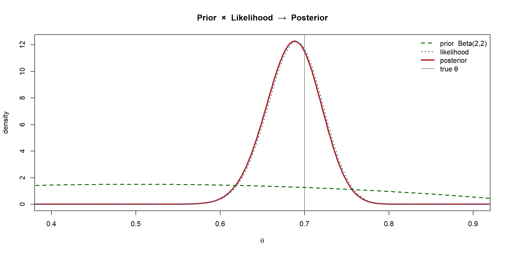

flowchart LR PR["Prior<br/>p(θ)"] --> M["Bayes' theorem"] LK["Likelihood<br/>p(data | θ)"] --> M M --> PO["Posterior<br/>p(θ | data)"] PO --> S["Summaries:<br/>posterior mean / MAP<br/>+ credible interval"]
Bayes’ Theorem and the Posterior
The previous page promised that all of Bayesian inference is one act: take a prior, fold in the likelihood, and read off a posterior. This page makes that precise. We derive Bayes’ theorem, name each piece, and then run the whole machine on the coin-flip model from the frequentist section — this time getting back not a point estimate and a standard error, but an entire distribution for \(\theta\).
Deriving Bayes’ theorem
Bayes’ theorem is just the definition of conditional probability, read in a particular direction. For any two events \(A\) and \(B\), \[ p(A \mid B) = \frac{p(A \cap B)}{p(B)} = \frac{p(B \mid A)\,p(A)}{p(B)} . \] Now replace \(A\) with “the parameter takes value \(\theta\)” and \(B\) with “we observed this data”. The same identity becomes the cornerstone of inference:
\[ \boxed{\,p(\theta \mid \text{data}) = \frac{p(\text{data} \mid \theta)\,p(\theta)}{p(\text{data})}\,} \]
Each term has a name and a job:
- \(p(\theta)\) — the prior: our uncertainty about \(\theta\) before the data.
- \(p(\text{data} \mid \theta)\) — the likelihood: how plausibly each \(\theta\) would have produced the observed data. This is exactly the likelihood from the frequentist section.
- \(p(\text{data})\) — the evidence (or marginal likelihood): the probability of the data averaged over all values of \(\theta\), \(\;p(\text{data}) = \int p(\text{data}\mid\theta)\,p(\theta)\,d\theta\).
- \(p(\theta \mid \text{data})\) — the posterior: our updated uncertainty about \(\theta\) after the data.
The proportionality shortcut
The evidence \(p(\text{data})\) in the denominator does not depend on \(\theta\) — it is a single number, the integral over all \(\theta\). As far as the shape of the posterior in \(\theta\) is concerned, it is just a normalising constant that forces the posterior to integrate to 1. So almost all the action is in the numerator:
\[ \boxed{\,p(\theta \mid \text{data}) \;\propto\; p(\text{data}\mid\theta)\,p(\theta)\,} \qquad \text{posterior} \;\propto\; \text{likelihood} \times \text{prior}. \]
ImportantThe evidence is the hard part
That harmless-looking denominator \(p(\text{data}) = \int p(\text{data}\mid\theta)\,p(\theta)\,d\theta\) is an integral over the whole parameter space. For a few lucky models (this page) it has a closed form. For most realistic models it is intractable — and computing the posterior despite it is the entire reason the Bayesian computation page exists. For now we either pick models where the integral is free, or work up to the normalising constant and let R’s distribution functions handle it.
The coin model, the Bayesian way
We reuse the Bernoulli/coin-flip model from the frequentist likelihood page: \(n\) flips, \(k\) heads, each flip heads with unknown probability \(\theta\). The likelihood is \[ p(\text{data}\mid\theta) \;\propto\; \theta^{k}(1-\theta)^{n-k}. \]
For the prior we need a distribution on \(\theta \in [0,1]\). The natural choice is the Beta distribution, \(\theta \sim \text{Beta}(a, b)\), whose density is \(p(\theta) \propto \theta^{a-1}(1-\theta)^{b-1}\). The two numbers \(a\) and \(b\) act like “prior heads” and “prior tails”: \(\text{Beta}(1,1)\) is flat (total ignorance), while \(\text{Beta}(20,20)\) is a sharp belief the coin is near-fair.
Now multiply prior by likelihood: \[ p(\theta \mid \text{data}) \;\propto\; \underbrace{\theta^{a-1}(1-\theta)^{b-1}}_{\text{prior}} \times \underbrace{\theta^{k}(1-\theta)^{n-k}}_{\text{likelihood}} = \theta^{(a+k)-1}(1-\theta)^{(b+n-k)-1}. \]
The right-hand side is another Beta density. We can read off its parameters by inspection:
\[ \boxed{\,\theta \mid \text{data} \;\sim\; \text{Beta}\big(a + k,\; b + n - k\big)\,} \]
No integral was harmed. The prior and posterior belong to the same family, so updating is just arithmetic on the parameters: add the observed heads to \(a\), the observed tails to \(b\).
NoteIn a nutshell: reading a Beta, and why the maths is so easy
Think of \(a\) and \(b\) as prior heads and prior tails. The bigger they are, the more sure you are, so the tighter the distribution; and the more equal they are, the more it concentrates around \(0.5\). (So \(\text{Beta}(1,1)\) is flat, \(\text{Beta}(20,20)\) is a sharp spike on fairness, \(\text{Beta}(70,30)\) is a confident lean toward heads.) The conjugacy step is no harder than it looks: multiplying two things of the form \(\theta^{\,\cdot}(1-\theta)^{\,\cdot}\) just adds the powers of \(\theta\), and adds the powers of \((1-\theta)\) — which is exactly “add the heads, add the tails.”
NoteConjugacy
When the posterior lands in the same family as the prior, the prior is called conjugate to the likelihood. Beta is conjugate to the Binomial; we will meet Gamma–Poisson and Normal–Normal on the next page. Conjugacy is a convenience, not a requirement — it gives a closed-form posterior and a beautifully simple interpretation (“the prior is just extra pseudo-data”), but most real models are not conjugate and need the computation of a later page.
Worked example in R
Let us watch the prior turn into the posterior. We simulate the same coin as the frequentist pages — set.seed(1), \(n = 200\), true bias \(0.7\) — so the two sections are looking at identical data.
Code
```{r}
#| warning: false
#| message: false
set.seed(1)
# Same simulated coin as the frequentist section
trueTheta <- 0.7
n <- 200
flips <- rbinom(n, size = 1, prob = trueTheta)
k <- sum(flips) # heads observed
# A weakly-informative prior: Beta(2, 2) — a gentle nudge toward 0.5, easily overruled
aPri <- 2
bPri <- 2
# Conjugate update: just add heads to a, tails to b
aPost <- aPri + k
bPost <- bPri + (n - k)
c(k = k, aPost = aPost, bPost = bPost)
``` k aPost bPost
138 140 64 That is the entire inference — two additions. Everything below is just reading information out of the resulting Beta posterior.
Code
```{r}
#| fig-align: center
theta <- seq(0, 1, length.out = 1000)
# The three curves, each scaled to a density for comparison
priorD <- dbeta(theta, aPri, bPri)
postD <- dbeta(theta, aPost, bPost)
# Likelihood as a function of theta (scaled to integrate to ~1 for plotting)
lik <- dbinom(k, n, theta); likD <- lik / (sum(lik) * diff(theta)[1])
plot(theta, postD, type = "l", lwd = 3, col = "firebrick",
xlab = expression(theta), ylab = "density",
main = "Prior × Likelihood → Posterior", xlim = c(0.4, 0.9))
lines(theta, priorD, lwd = 2, col = "darkgreen", lty = 2)
lines(theta, likD, lwd = 2, col = "steelblue", lty = 3)
abline(v = trueTheta, col = "grey40", lty = 1)
legend("topright", bty = "n", lwd = c(2, 2, 3, 1), lty = c(2, 3, 1, 1),
col = c("darkgreen", "steelblue", "firebrick", "grey40"),
legend = c("prior Beta(2,2)", "likelihood", "posterior", "true θ"))
```
The picture tells the whole story: the broad green prior, multiplied by the sharp blue likelihood, yields the red posterior — which sits essentially on top of the likelihood because, with \(n = 200\), the data overwhelms the gentle prior. The posterior is our complete answer: not “the estimate is 0.7 ± something,” but a full distribution saying how plausible every value of \(\theta\) is.
Summarising the posterior
A distribution is more than most reports need, so we compress it into a few numbers — the Bayesian analogues of the point estimate and confidence interval.
Point summaries: posterior mean and MAP
Two natural “best single guesses”:
- The posterior mean \(\mathbb{E}[\theta \mid \text{data}]\) — the centre of mass. For a \(\text{Beta}(a',b')\) posterior it is \(a'/(a'+b')\).
- The maximum a posteriori (MAP) estimate — the peak of the posterior, the single most plausible value. With a flat prior the MAP equals the frequentist MLE, which is the first hint of the bridge between the two sections.
Code
```{r}
postMean <- aPost / (aPost + bPost)
postMap <- (aPost - 1) / (aPost + bPost - 2) # mode of a Beta
mle <- k / n # the frequentist estimate
c(postMean = postMean, MAP = postMap, frequentist_MLE = mle)
``` postMean MAP frequentist_MLE
0.6862745 0.6881188 0.6900000 All three are close to one another and to \(0.7\) — with this much data and a weak prior, the Bayesian and frequentist point estimates nearly coincide.
Interval summary: the credible interval
The Bayesian replacement for the confidence interval is the credible interval: an interval that contains \(\theta\) with a stated posterior probability. The simplest is the equal-tailed interval — chop 2.5% off each tail of the posterior — which for a Beta is one call to qbeta:
Code
```{r}
cred95 <- qbeta(c(0.025, 0.975), aPost, bPost)
cred95
```[1] 0.6211107 0.7479788
ImportantCredible interval ≠ confidence interval
This interval supports the statement everyone wants to make: “given the data and prior, there is a 95% probability that \(\theta\) lies in this interval.” That is a probability statement about \(\theta\), which is legitimate here only because \(\theta\) is treated as random. The frequentist confidence interval from the previous section looks almost identical numerically but means something quite different — a statement about the long-run behaviour of the procedure, not about this particular \(\theta\). Same numbers, different claims.
There is a second flavour worth knowing. The highest posterior density (HPD) interval is the shortest interval containing 95% of the posterior mass — equivalently, every point inside it has higher density than every point outside. For a symmetric posterior it matches the equal-tailed one; for a skewed posterior it is narrower and is often the more honest summary.
Code
```{r}
# Highest posterior density interval by a quick numerical search over the start tail-prob
hpdBeta <- function(a, b, level = 0.95) {
f <- function(lowerTail) {
lo <- qbeta(lowerTail, a, b)
hi <- qbeta(lowerTail + level, a, b)
hi - lo # width to minimise
}
opt <- optimize(f, c(0, 1 - level))
lower <- opt$minimum
c(qbeta(lower, a, b), qbeta(lower + level, a, b))
}
rbind(equal_tailed = cred95,
HPD = hpdBeta(aPost, bPost)) |> round(4)
``` [,1] [,2]
equal_tailed 0.6211 0.7480
HPD 0.6224 0.7491Here the posterior is nearly symmetric, so the two intervals barely differ — but the HPD is the slightly shorter of the two, as it must be.
TipGoing further 🚀
You rarely need to hand-roll an HPD search like hpdBeta above. Given a vector of posterior draws (or a closed-form posterior), packages do it in one line:
Code
```{r}
#| eval: false
HDInterval::hdi(draws, credMass = 0.95) # from a sample of draws
bayestestR::ci(draws, ci = 0.95, method = "HDI") # tidy output, same idea
```HDInterval::hdi() also accepts a distribution name (e.g. hdi(qbeta, shape1 = aPost, shape2 = bPost)) to get the exact-density HPD without sampling.
Summary
| Object | Symbol | What it is |
|---|---|---|
| Prior | \(p(\theta)\) | Belief about \(\theta\) before the data |
| Likelihood | \(p(\text{data}\mid\theta)\) | The data’s verdict on each \(\theta\) (shared with the frequentist section) |
| Evidence | \(p(\text{data})\) | Normalising constant; the integral that is usually hard |
| Posterior | \(p(\theta\mid\text{data})\) | Updated belief — the complete answer |
| Posterior mean / MAP | \(\mathbb{E}[\theta\mid\text{data}]\), mode | Point summaries of the posterior |
| Credible interval | — | Interval with stated posterior probability of containing \(\theta\) |
The whole of Bayesian inference is “posterior \(\propto\) likelihood \(\times\) prior,” followed by reading summaries off the posterior. The only thing standing between us and harder models is that the evidence integral is rarely free — which raises two questions we take up next: where does the prior come from, and what do we do when the maths runs out?